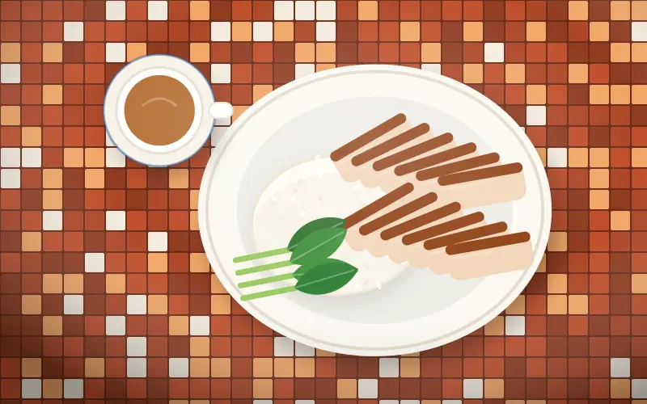
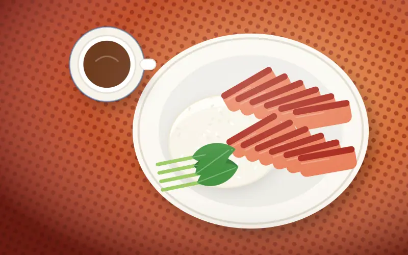
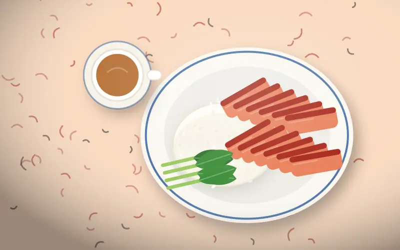
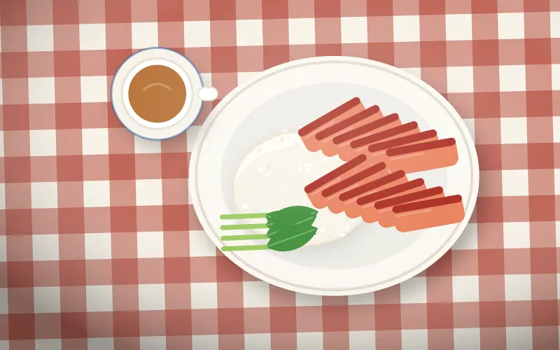
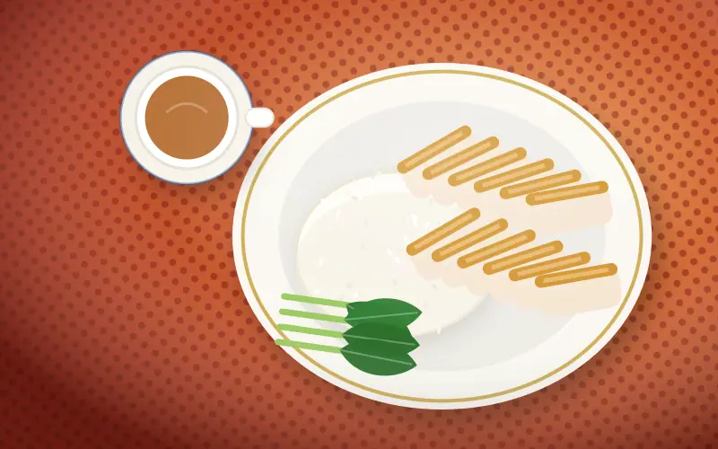

Cheap roast meats in Hong Kong 燒味
13 places, from HK$52, ranked by Value Score.
 Joy Hing Roasted Meat再興燒臘飯店 · Wan Chai$58
Joy Hing Roasted Meat再興燒臘飯店 · Wan Chai$58  Sun Kwai Heung Barbecue新桂香燒臘 · Chai Wan~$52
Sun Kwai Heung Barbecue新桂香燒臘 · Chai Wan~$52 Yat Lok Roast Goose一樂燒鵝 · Central$98
Yat Lok Roast Goose一樂燒鵝 · Central$98  Chan Kan Kee Chiu Chow陳勤記鹵鵝飯店 · Sheung Wan$82
Chan Kan Kee Chiu Chow陳勤記鹵鵝飯店 · Sheung Wan$82  Kam's Roast Goose甘牌燒鵝 · Wan Chai$92
Kam's Roast Goose甘牌燒鵝 · Wan Chai$92 
Tai Hing (Tuen Mun)太興（屯門） · Tuen Mun$56
Tai Hing (Aberdeen)太興（香港仔） · Aberdeen$56
Tai Hing (San Po Kong)太興（新蒲崗） · San Po Kong$56 Hung's Delicacies阿鴻小吃 · North Point~$98
Hung's Delicacies阿鴻小吃 · North Point~$98 Yue Kee Roast Goose裕記大飯店 · Sham Tseng$98
Yue Kee Roast Goose裕記大飯店 · Sham Tseng$98 
Tai Hing (Tai Koo)太興（太古） · Tai Koo$72
Tai Hing (Tsing Yi)太興（青衣） · Tsing Yi$78 Tai Hing (Yuen Long)太興（元朗） · Yuen Long$78
Tai Hing (Yuen Long)太興（元朗） · Yuen Long$78 More guides
Best meals under HK$50Cheap eats under HK$30Best value for moneyLate-night cheap eatsHidden gemsCheap breakfast in Hong KongRoast Meats 燒味Cha Chaan Teng 茶餐廳Dim Sum 點心Noodles 粉麵Congee 粥品Claypot 煲仔Cantonese 粵菜Seafood 海鮮Desserts 甜品Bakery 餅店Street Snacks 小食Vegetarian 素食HK Fast Food 快餐Rice Noodles 米線Thai 泰國菜Curry 咖喱Japanese 日式Vietnamese 越南菜Taiwanese 台灣菜Shanghainese 上海菜Dumplings & Northern 北方菜HK-style Western 港式西餐